Условие. В лесу есть $k$ компонент размеров $c_1, c_2, \ldots, c_k$. Сколькими способами можно добавить рёбер, чтобы получилось дерево? Доказать, что ответ равен $c_1 c_2 \cdots c_k \cdot n^{k-2}$, где $n = c_1 + \ldots + c_k$.
Идея. Превратим каждую компоненту в одну «толстую» вершину — получим граф из $k$ точек. Чтобы из леса вышло дерево, надо добавить ровно $k - 1$ ребро между компонентами, причём эти рёбра должны образовать дерево на $k$ толстых вершинах.
Сколько вариантов?
Идея этого трюка: код Прюфера дерева — это последовательность длины $k-2$ из номеров вершин. Если у вершины $V_i$ степень $d_i$, то в коде она появится $d_i - 1$ раз. Поэтому суммирование $c_i^{d_i - 1}$ по всем деревьям превращается в суммирование по всем строкам длины $k-2$, а это и есть $(c_1 + \ldots + c_k)^{k-2} = n^{k-2}$. Один лишний множитель $c_i$ от каждой компоненты выходит за скобку — получаем $c_1 c_2 \cdots c_k$.
Ответ: число способов $= c_1 c_2 \cdots c_k \cdot n^{k-2}$. Частный случай $c_1 = \ldots = c_k = 1$ даёт обычную формулу Кэли $k^{k-2}$.
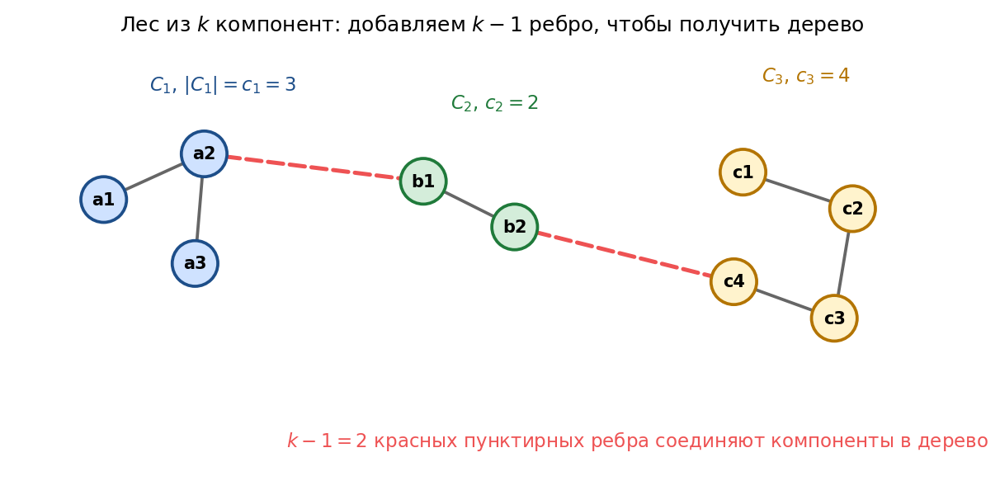
Условие. Найти число эйлеровых циклов в полном графе $K_5$. И можно ли вывести формулу для $K_n$?
Эйлеров цикл существует? В $K_5$ степень каждой вершины $= 4$ — чётное число. По теореме об эйлеровых графах этого достаточно, цикл есть.
Сколько их? Прямой перебор слишком долгий, поэтому пользуемся BEST-теоремой. Если в графе все степени чётные, число эйлеровых обходов считается по специальной формуле: оно равно (числу остовных деревьев с корнем) умноженному на произведение факториалов $(\deg(v) - 1)!$ для всех вершин.
Аккуратный подсчёт для $K_5$ (с учётом, что цикл можно «крутить» по кругу и идти в обе стороны) даёт ровно 264 эйлеровых цикла. Это известное число, оно есть в последовательности OEIS A007082.
Про общий $K_n$. Замкнутой формулы нет — расчёт через BEST-теорему сводится к вычислению определителя матрицы Лапласа, простой формулы тут не получится. Первые значения:
| $n$ | 3 | 5 | 7 | 9 |
|---|---|---|---|---|
| число эйл. циклов | 1 | 264 | 129 976 320 | $\approx 9 \cdot 10^{14}$ |
Ответ: в $K_5$ ровно 264 эйлеровых цикла. Для $K_n$ короткой формулы нет, есть только рекуррентные/численные методы.
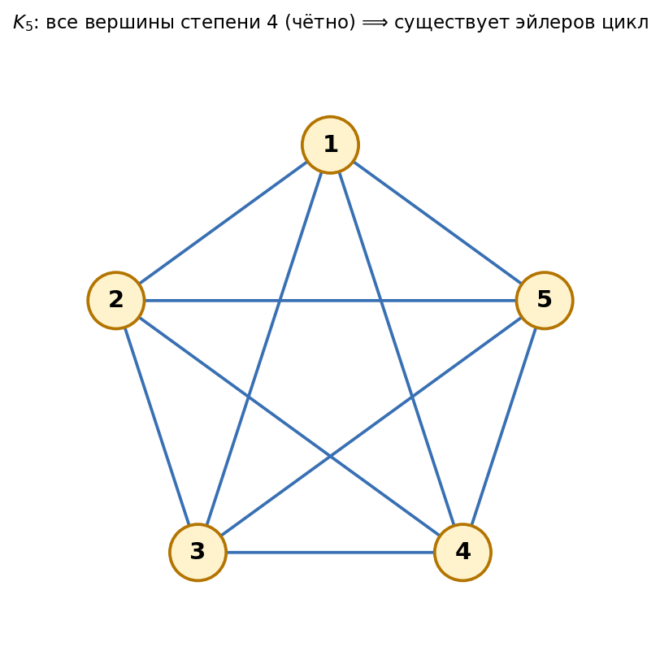
Условие. Теорема Хватала даёт условие на степени вершин, при котором граф гарантированно гамильтонов. Если это условие не выполнено — показать, что найдётся негамильтоновый граф с такой степенной последовательностью.
Что значит «условие не выполнено». Сортируем степени по возрастанию $d_1 \le d_2 \le \ldots \le d_n$. Условие Хватала нарушено, если есть индекс $i < n/2$, для которого одновременно: $d_i \le i$ и $d_{n-i} \le n - i - 1$. Берём такое $i$ и строим граф.
Конструкция. Делим $n$ вершин на три группы:
Между $A$ и $B$ — рёбер нет. Зато от $C$ ко всем остальным — есть. Получается, что вершины из $A$ и $B$ соединены только с $C$, имеют степень $i$. Вершины из $C$ соединены со всеми остальными, степень $= n - 1$.
Почему граф не гамильтонов. Если бы в нём был гамильтонов цикл, то после удаления $|C| = i$ вершин число компонент не превышало бы $i$. А что получится у нас? Удалив всю клику $C$, остаются $A \cup B$ — это $n - i$ изолированных точек, то есть $n - i$ компонент. Поскольку мы взяли $i < n / 2$, то $n - i > i$ — компонент больше, чем удалённых вершин. Противоречие, гамильтонова цикла быть не может.
Вывод: построенный граф имеет степенную последовательность $(i, i, \ldots, i, n-1, \ldots, n-1)$, нарушающую условие Хватала, и при этом не гамильтонов. Значит, ослабить условие Хватала нельзя.
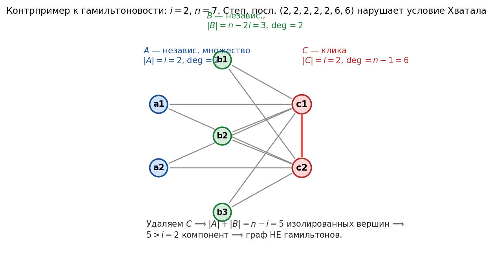
Условие. Дана 2-SAT формула. Найти такое решение $(x_1, x_2, \ldots, x_n)$, чтобы оно было лексикографически минимальным (в условии сказано «наверняка NP-полное» — это шутка, на самом деле решается за полином).
Идея. Жадный перебор. 2-SAT (выполнима ли формула?) умеем решать за линию через SCC. Используем это как «оракул»:
Почему получается минимум. На каждой позиции мы ставим $0$, если это вообще возможно. $0$ всегда лексикографически меньше $1$ — значит, выбор оптимальный.
Сложность: $n$ запусков 2-SAT по $O(n + m)$ — итого $O(n(n+m))$, полином. Никакая NP-полнота тут не нужна.
Ответ: жадный алгоритм с $n$ перепроверками 2-SAT, $O(n(n+m))$.
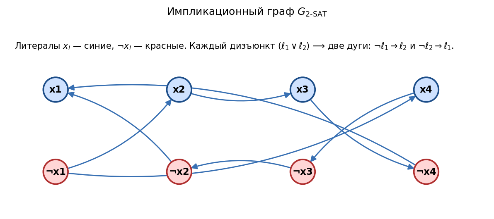
Условие. Раскрасить вершины графа в 3 цвета так, чтобы соседние имели разные. Каждой вершине задан один запрещённый цвет.
Главное наблюдение. Обычная 3-раскраска — NP-полная задача, но здесь у каждой вершины запрещён один цвет, значит, доступных цветов ровно два. Это упрощает задачу: списки по 2 элемента — стандартный случай, который сводится к 2-SAT.
Сведение к 2-SAT. Для каждой вершины $v$ заводим булеву переменную $x_v$: $x_v = 0$ значит «$v$ покрашена в первый из доступных цветов», $x_v = 1$ — во второй. Для каждого ребра $(u, v)$ перебираем 4 пары значений $(x_u, x_v)$ и смотрим, при каких из них цвета у $u$ и $v$ совпадают. Те пары, при которых совпадают, запрещаем 2-дизъюнктом.
Пример. Если у $u$ доступны цвета {1, 2}, у $v$ — {1, 3}, то цвета совпадают только когда оба покрашены в 1, то есть $x_u = 0$ и $x_v = 0$. Запрещаем эту комбинацию дизъюнктом $(x_u \lor x_v)$.
Итого: получили 2-CNF размера $O(n + m)$. Решаем стандартным алгоритмом 2-SAT через SCC за $O(n + m)$.
Ответ: сведение к 2-SAT, линейная сложность $O(n + m)$ — полиномиально, в отличие от обычной 3-раскраски.
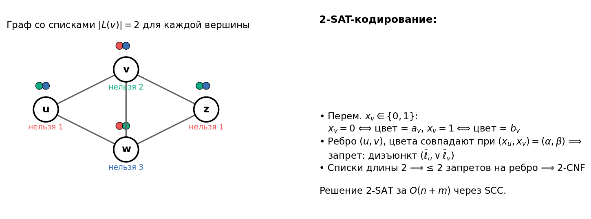
Условие. У Пети много друзей и куча условий вида «я приду только если придёт $X$» или «если будет $Y$, меня не будет». Составить список гостей, удовлетворяющий всем условиям (или сказать, что нельзя).
Идея. Это в чистом виде 2-SAT. Для каждого друга $X$ заводим переменную: $x = 1$ значит «$X$ придёт», $x = 0$ — «не придёт». Все типы условий — импликации:
Каждая такая запись — дизъюнкт из двух литералов, то есть 2-CNF. Решаем стандартным алгоритмом за $O(n + m)$:
Ответ: задача — это 2-SAT. Линейный алгоритм через SCC за $O(n + m)$ либо находит расстановку, либо говорит, что вечеринку устроить нельзя.
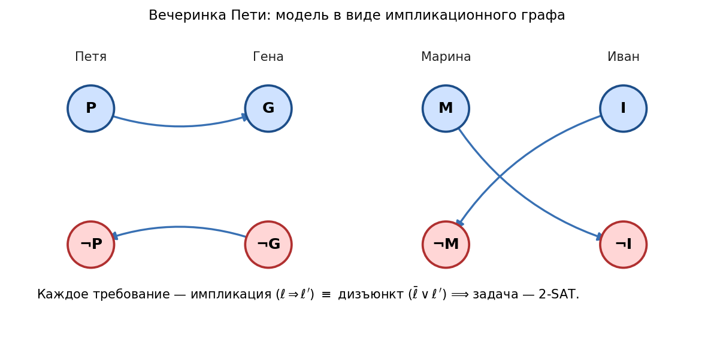
Условие. Карта городов: между каждой парой задан расход топлива. Найти минимальный размер бака, чтобы можно было долететь из любого города в любой (с дозаправками). MST использовать нельзя.
Переформулировка. Если бак — $B$, то самолёт может пролететь только по рёбрам с расходом $\le B$. Бак годится тогда и только тогда, когда этот «урезанный» граф связен. Чем больше $B$, тем больше рёбер доступно, поэтому задача монотонна по $B$ — годятся все $B$, начиная с какого-то минимального $B^*$.
Алгоритм.
Ответ — вес ребра под номером $k^*$, то есть минимальный $B$, при котором подграф становится связным.
Сложность. Бинпоиск даёт $\log m$ итераций по $O(n + m)$ — итого $O((n + m) \log m)$. На полном графе $m \approx n^2$, поэтому $O(n^2 \log n)$.
Ответ: сортировка рёбер + бинарный поиск + DFS-проверка связности. MST не строим — используем только проверку «связен или нет».
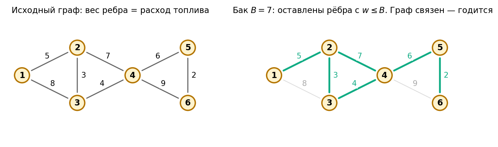
Условие. Проект состоит из 8 работ со связями и длительностями. Построить топологическую сортировку, посчитать таблицу $(D, P)$ и определить оптимальный план (минимальное время выполнения проекта).
| Работа $i$ | Предшествующие | Длит. $t_m$ |
|---|---|---|
| 1 | 3, 4 | 5 |
| 2 | 3, 6 | 4 |
| 3 | 8 | 6 |
| 4 | 3, 5, 6 | 3 |
| 5 | 8 | 2 |
| 6 | 3, 5, 7 | 3 |
| 7 | 8 | 4 |
| 8 | — | 2 |
Идея. Строим граф зависимостей (стрелка $j \to i$ значит «$i$ зависит от $j$»). Для каждой работы считаем самый ранний момент окончания $D[i]$: это максимум $D$ по её предшественникам плюс собственная длительность $t_m[i]$. Запоминаем также $P[i]$ — тот предшественник, на котором достигся максимум.
Топологическая сортировка. Один из возможных порядков (от истока к листьям):
8 → 5 → 7 → 3 → 6 → 4 → 2 → 1
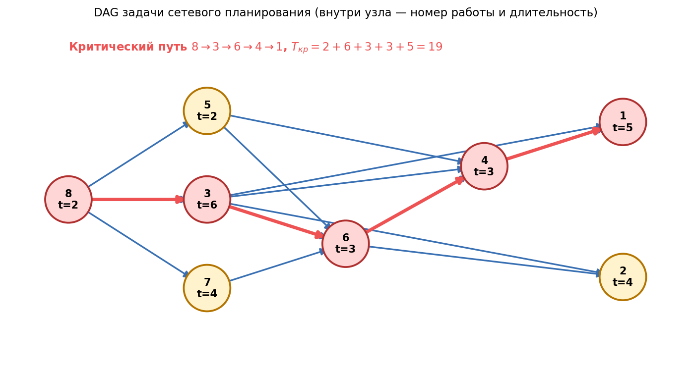
Таблица $(D, P)$ по итерациям (на каждом шаге обрабатываем одну работу из топсорта):
| Шаг | Работа $i$ | $D[$предш.$]$ | max | $+ t_m$ | $D[i]$ | $P[i]$ |
|---|---|---|---|---|---|---|
| 1 | 8 | — | 0 | $+2$ | 2 | — |
| 2 | 5 | $D[8]=2$ | 2 | $+2$ | 4 | 8 |
| 3 | 7 | $D[8]=2$ | 2 | $+4$ | 6 | 8 |
| 4 | 3 | $D[8]=2$ | 2 | $+6$ | 8 | 8 |
| 5 | 6 | $8,\,4,\,6$ | 8 | $+3$ | 11 | 3 |
| 6 | 4 | $8,\,4,\,11$ | 11 | $+3$ | 14 | 6 |
| 7 | 2 | $8,\,11$ | 11 | $+4$ | 15 | 6 |
| 8 | 1 | $8,\,14$ | 14 | $+5$ | 19 | 4 |
Восстановление критического пути. Берём работу с максимальным $D$ (это работа 1 с $D = 19$) и идём по указателям $P$ назад:
$P[1] = 4 \Rightarrow P[4] = 6 \Rightarrow P[6] = 3 \Rightarrow P[3] = 8$
Получили критический путь: 8 → 3 → 6 → 4 → 1, длиной $2+6+3+3+5 = 19$.
Ответ: минимальное время выполнения проекта $T_{кр} = 19$. Критический путь: $8 \to 3 \to 6 \to 4 \to 1$. Оптимальный план — запускать каждую работу сразу, как только все её предшественники закончатся.
Условие. Заказчик дал на проект $T_з = 30$ (а у нас критический путь всего 19). Посчитать для каждой работы $\text{ebeg}$, $\text{efin}$, $\text{lbeg}$, $\text{lfin}$ и полный резерв $r$. Указать критические работы.
Что считаем.
Backward pass. Идём в обратном порядке топсорта: $1, 2, 4, 6, 3, 7, 5, 8$. Для работ без последователей (1 и 2) ставим $\text{lfin} = T_з = 30$. Для остальных — $\text{lfin}[i]$ это минимум $\text{lbeg}$ по последователям, а $\text{lbeg}[i]$ просто вычитаем длительность.
| $i$ | $t_m$ | Последователи | $\text{lfin}$ | $\text{lbeg} = \text{lfin} - t_m$ |
|---|---|---|---|---|
| 1 | 5 | — | 30 | 25 |
| 2 | 4 | — | 30 | 26 |
| 4 | 3 | {1} | 25 | 22 |
| 6 | 3 | {2, 4} | $\min(26, 22) = 22$ | 19 |
| 3 | 6 | {1, 2, 4, 6} | $\min(25, 26, 22, 19) = 19$ | 13 |
| 7 | 4 | {6} | 19 | 15 |
| 5 | 2 | {4, 6} | $\min(22, 19) = 19$ | 17 |
| 8 | 2 | {3, 5, 7} | $\min(13, 17, 15) = 13$ | 11 |
Сводная таблица:
| $i$ | $t_m$ | $\text{ebeg}$ | $\text{efin}$ | $\text{lbeg}$ | $\text{lfin}$ | $r$ |
|---|---|---|---|---|---|---|
| 1 | 5 | 14 | 19 | 25 | 30 | 11 |
| 2 | 4 | 11 | 15 | 26 | 30 | 15 |
| 3 | 6 | 2 | 8 | 13 | 19 | 11 |
| 4 | 3 | 11 | 14 | 22 | 25 | 11 |
| 5 | 2 | 2 | 4 | 17 | 19 | 15 |
| 6 | 3 | 8 | 11 | 19 | 22 | 11 |
| 7 | 4 | 2 | 6 | 15 | 19 | 13 |
| 8 | 2 | 0 | 2 | 11 | 13 | 11 |
Критические работы. Это работы с минимальным резервом. Здесь $r_{\min} = T_з - T_{кр} = 30 - 19 = 11$. Получаем критические работы: 1, 3, 4, 6, 8 — ровно вершины критического пути из задачи 9.1.
Ответ: резерв критических работ — 11, остальных — 13 или 15. Критические: 1, 3, 4, 6, 8. Если бы $T_з = T_{кр} = 19$, резерв у них стал бы 0.
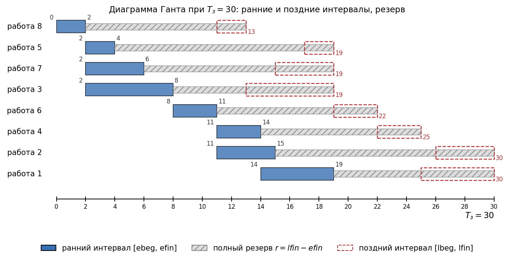
Условие. Дан взвешенный орграф (7 вершин, матрица смежности ниже). Найти путь из 1 в 7, в котором минимальный вес ребра максимален (задача об узких местах). Показать таблицу $(D, P)$ по итерациям.
| из / в | 1 | 2 | 3 | 4 | 5 | 6 | 7 |
|---|---|---|---|---|---|---|---|
| 1 | — | 5 | 3 | — | — | — | — |
| 2 | — | — | — | 2 | 3 | — | — |
| 3 | — | 1 | — | 6 | — | 4 | — |
| 4 | 1 | — | — | — | 1 | 1 | 4 |
| 5 | — | — | — | — | — | 12 | 1 |
| 6 | — | — | — | 3 | — | — | 2 |
| 7 | — | — | — | — | — | — | — |
Идея. Берём Дейкстру и переделываем её под минимакс:
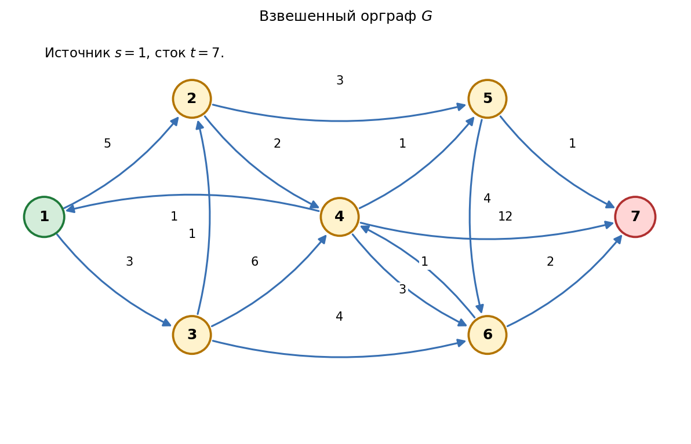
Таблица $(D, P)$ по итерациям (жирным — выбранная на шаге вершина):
| Шаг | Выбираем | $D[1]$ | $D[2]$ | $D[3]$ | $D[4]$ | $D[5]$ | $D[6]$ | $D[7]$ | Что обновили |
|---|---|---|---|---|---|---|---|---|---|
| 0 | — | $+\infty$ | $-\infty$ | $-\infty$ | $-\infty$ | $-\infty$ | $-\infty$ | $-\infty$ | старт |
| 1 | 1 | $+\infty$ | 5 | 3 | — | — | — | — | $D[2]=5$ (через 1), $D[3]=3$ |
| 2 | 2 | $+\infty$ | 5 | 3 | 2 | 3 | — | — | $D[4]=\min(5,2)=2$, $D[5]=3$ |
| 3 | 3 | $+\infty$ | 5 | 3 | 3 | 3 | 3 | — | $D[4]$ улучшен до 3 (через 3, мин(3,6)=3), $D[6]=3$ |
| 4 | 5 | $+\infty$ | 5 | 3 | 3 | 3 | 3 | 1 | $D[7]=\min(3,1)=1$ |
| 5 | 4 | $+\infty$ | 5 | 3 | 3 | 3 | 3 | 3 | $D[7]$ улучшен до $\min(3,4)=3$, $P[7]=4$ |
| 6 | 6 | $+\infty$ | 5 | 3 | 3 | 3 | 3 | 3 | $\min(3,2)=2 \le 3$, ничего не меняем |
| 7 | 7 | $+\infty$ | 5 | 3 | 3 | 3 | 3 | 3 | сток обработан, конец |
Восстановление пути. $P[7] = 4$, $P[4] = 3$, $P[3] = 1$. Путь: 1 → 3 → 4 → 7, веса рёбер $(3, 6, 4)$, узкое место — минимальное из них, то есть $3$.
Проверка. Можно перебрать другие пути:
Ответ: MaxMin путь — $1 \to 3 \to 4 \to 7$, узкое место равно 3.
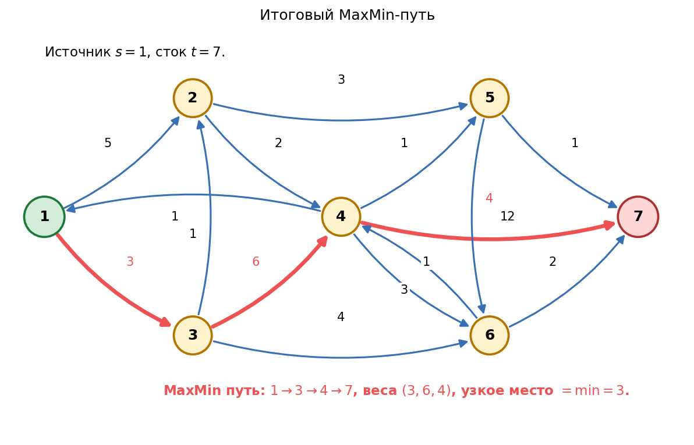
Дискретная математика, ИКНК СПбПУ · Тоцкий В., 5151003/40001 · 2026